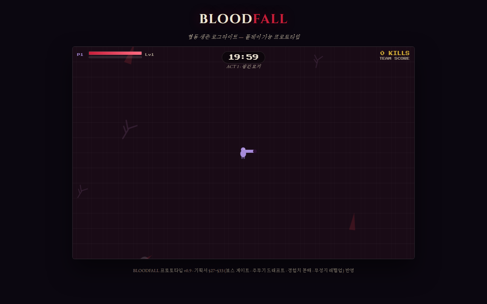

BLOODFALL (뱀서라이크 협동 프로토타입 v0.9) 자동 테스트 결과
실행: 2026-11-02 01:32 · 도구: Playwright(Chromium) · 대상: 뱀서라이크/bloodfall_playable.html · 리포트 생성: 2026-11-02
30 / 38자동화한 TC / 전체 TC
23테스트 수 (TC 여러 개를 묶은 것 포함)
22통과
1실패
87초전체 실행 시간
TC 출처: 기존 TC 없음 — 뱀서라이크/게임기획서_뱀서라이크_멀티.md v0.9를 근거로 Claude Code가 작성한 TC 초안
실패 상세
[BF-04] 주무기 드래프트 10초 미선택 시 피스톨 자동 배정
Error: 기획서 §31.1: 미선택 시 피스톨(표준형) 자동 배정 expect(received).toBe(expected) // Object.is equality Expected: "bullet" Received: "laser"

자동화한 TC (30건)
검토 칸: review 칸은 LKM이 '확인함' 또는 '버림'으로 바꾼다. AI가 쓴 TC는 처음에 모두 '초안'.
| TC | 내용 | 근거 | 결과 | 시간 | 검토 |
|---|---|---|---|---|---|
| BF-01 | 모드 선택 메뉴에 1인·2인 협동·온라인 버튼 노출 | §8 | 통과 | 4.2초 | 초안 |
| BF-02 | 게임 시작 시 주무기 카드 3장(피스톨·샷건·레이저) 제시, 선택 전 타이머 정지 | §31.1 | 통과 | 2.4초 | 초안 |
| BF-03 | 주무기 카드 선택 시 그 무기 1개만 장착되고 게임 시작 | §30.1 §31.1 | 통과 | 0.8초 | 초안 |
| BF-04 | 주무기 드래프트 10초 미선택 시 피스톨 자동 배정 | §31.1 | 실패 | 12.6초 | 초안 |
| BF-05 | WASD 이동, 맵 경계 밖으로 나가지 않음 | §4.1 §25 | 통과 | 2.5초 | 초안 |
| BF-06 | 마우스 좌클릭을 누르는 동안만 주무기 발사 | §23 | 통과 | 1.9초 | 초안 |
| BF-07 | 조준 사격으로 몬스터 처치 시 처치 수·HUD 증가, 경험치 오브 드랍 | §3 §8 | 통과 | 1.8초 | 초안 |
| BF-08 | 경험치가 다 차면 레벨업, 다음 필요 경험치 = 20×1.2^(레벨-1), LEVEL UP 카드 3장 | §32.3 §33.2 | 통과 | 0.9초 | 초안 |
| BF-09 | 연속 레벨업은 대기열로 이어지고 매번 10초가 새로 적용 | §33.1-5 | 통과 | 3.0초 | 초안 |
| BF-10 | 카드 선택 중 무적 (몬스터가 붙어도 체력 유지) | §33.1-2 | 통과 | 2.5초 | 초안 |
| BF-11 | 카드 선택 중 이동 불가 | §33.1-2 | 통과 | 2.5초 | 초안 |
| BF-12 | 카드 선택 중 보조무기 자동 발동 정지 | §33.1-6 | 통과 | 2.5초 | 초안 |
| BF-13 | 카드 선택 중에도 게임 진행 시간은 계속 흐름 (무정지) | §33.1-1 | 통과 | 2.5초 | 초안 |
| BF-14 | 레벨업 카드 10초 미선택 시 무작위 1장 자동 적용 후 복귀 | §33.1-3 | 통과 | 11.3초 | 초안 |
| BF-15 | 레벨업 카드에 장착하지 않은 주무기(샷건·레이저)는 등장하지 않음 | §30.1 | 통과 | 0.8초 | 초안 |
| BF-16 | 2인 협동 경험치 분배: 주운 사람 100%, 파트너 70% | §32.1 | 통과 | 1.0초 | 초안 |
| BF-17 | 로컬 협동 동시 레벨업 시 한 명씩, 대기자의 10초는 흐르지 않음 | §33.2 | 통과 | 2.9초 | 초안 |
| BF-18 | 05:00에 Act 1 보스 등장, 진행 타이머 정지·HUD ⚔ 표시·보스 체력바 | §27.1 §27.2 | 통과 | 5.8초 | 초안 |
| BF-19 | 보스 처치 시 전리품 카드 3장(서로 다른 희귀 강화 2 + 재정비 1), Act 2 전환 | §31.2 §27.2 | 통과 | 5.8초 | 초안 |
| BF-20 | 전리품을 고르기 전까지 타이머 정지 유지, 고른 뒤 재개 | §31.2 | 통과 | 5.8초 | 초안 |
| BF-21 | 아이템 박스 포션: 최대 체력 10% 회복, 최대치 초과 안 함 | §16.2 | 통과 | 0.9초 | 초안 |
| BF-22 | 아이템 박스 폭탄: 가까운 몬스터 10마리 처치, 보스 제외 | §16.2 | 통과 | 0.9초 | 초안 |
| BF-23 | 아이템 박스 자석: 3초간 먼 경험치 오브도 흡수 | §16.2 | 통과 | 3.3초 | 초안 |
| BF-24 | 1인 체력 0 → 전멸 결과 창(FAIL) | §3 | 통과 | 0.9초 | 초안 |
| BF-25 | 최종 보스(나이트폴 공작) 처치 시 클리어 결과 창(CLEAR) | §20 §27.2 | 통과 | 0.9초 | 초안 |
| BF-26 | [다시 도전] 시 같은 모드로 주무기 선택부터 새 게임 | §8 | 통과 | 0.9초 | 초안 |
| BF-27 | [모드 선택으로] 시 메뉴 복귀 | §8 | 통과 | 0.9초 | 초안 |
| BF-28 | 2인 협동: 다운된 파트너 곁에 2.6초 머무르면 체력 50%로 소생 | §2 §3 | 통과 | 3.8초 | 초안 |
| BF-29 | 온라인 참가: 4자리가 아닌 방 코드 입력 시 안내 문구 | §18 | 통과 | 0.8초 | 초안 |
| BF-30 | 몬스터 스폰·사격이 이어지는 20초 플레이 동안 콘솔 오류 없음 | - | 통과 | 20.9초 | 초안 |
자동화하지 않은 TC와 이유
| TC | 이유 |
|---|---|
| BF-M1 | 온라인 P2P 실제 연결·동기화(§18, §32.2): 두 사람과 외부 중계 서버 필요 |
| BF-M2 | 보스 패턴 예고 연출과 회피 체감(§13, §28): 사람이 보고 판단 |
| BF-M3 | 20분 라운드 밸런스·총 플레이타임 24~28분(§27.4): 실제 플레이로 측정 |
| BF-M4 | 카메라 추적의 부드러움(§25.1): 눈으로 판단 |
| BF-M5 | 피격 피드백 가독성(§15): 눈으로 판단 |
| BF-M6 | 무기 진화 7종 조합(§21, §30.2): 다음 단계 자동화 후보 |
| BF-M7 | 시체폭탄병 예고 중 처치 시 폭발 취소(§29.1): 다음 단계 자동화 후보 |
| BF-M8 | 모바일·터치 조작: 기획서 범위 밖(데스크톱 키보드·마우스 기준) |